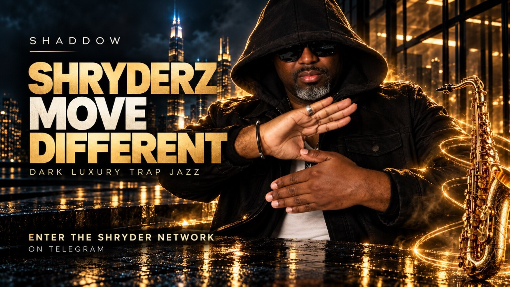

What is it?
An outward-facing S
A two-hand gesture used as a visible signal of SHRYDER identity, recognition and shared values.
The official community signal created by Shaddow
Two hands. One signal. A living symbol that began in the Shaddowryderz world, moved through music and JDM culture, and returns in the SHRYDER era as a mark of perseverance, freedom, bravery and belonging.

What is it?
A two-hand gesture used as a visible signal of SHRYDER identity, recognition and shared values.
Where did it come from?
Shaddow traces it to earlier live shows, fans and JDM car culture in Japan and Korea. It was later documented publicly as the Shaddowryderz Hand Sign.
What is it now?
The SHRYDER Sign is the modern continuation of that gesture: a bridge between Shaddow’s history and the community still being built.
Origin story · Shaddow’s first-person account
Shaddow’s account of the sign begins years before this page. During an earlier period of performing around Japan and Korea, music, friendship and import-car culture overlapped. Nights in Yokohama and Tokyo brought together live shows, drives, events, fans, friends and supporters. The gesture was part of that physical culture: people threw the sign in the room, around the cars and in the shared moments that made the community feel recognizable to itself.
At the time, it belonged to the Shaddowryderz creative world and to the Shaddowryderz Army—the people around it. In the current era, Shaddow has resurrected the sign as the SHRYDER Sign. The name has evolved; the purpose remains human: to see one another, to remember where the culture came from and to signal that the story is still moving.
This is not presented as a claim that no similar hand shape has ever existed. It is the documented origin account of the named sign, its meaning and its use inside Shaddow’s own music-and-community ecosystem.
What the SHRYDER Sign means to Shaddow
The sign is not an empty logo made with hands. Shaddow defines it through values—ideas a person can carry before they ever post a photograph or enter a room.
Pressure does not get the final word. The sign recognizes people who bend, learn, recover and keep moving.
Family means chosen loyalty as well as blood: people who celebrate the rise, remain during the fall and help one another return.
The signal means the world is not carried alone. Music becomes a meeting point and recognition becomes relationship.
When the road is long, the work continues. The sign remembers every difficult mile without allowing hardship to define the destination.
Different lives can move with a shared purpose. Unity here does not erase individuality; it creates strength through connection.
Freedom is the ability to create, travel, speak, choose and become. It echoes the open road, the stage and the refusal to live inside someone else’s limits.
Abundance means building capacity, opportunity and self-determination—and helping the community flourish. It is an aspiration and value, not a promise of income or investment returns.
Fearlessness is not the absence of fear. It is the decision that fear will not control the next move.
Bravery turns belief into action: showing up, protecting what matters, speaking honestly and taking the next step when certainty is unavailable.
An interpretation of the symbol
The SHRYDER Sign can be read as a compact promise: we endure, we recognize our people, we build together, we move freely, we create abundance and we do not abandon the community when the road gets difficult.
That is what makes the gesture bigger than a pose. One hand alone does not complete the shape. Its visual logic depends on two parts working together—an image of individual strength becoming collective identity.
How to make the SHRYDER Sign
Use Shaddow’s photograph as the official reference. The aim is a clear, outward-facing S—not rigid perfection.
Bring both hands forward at about chest height, where the shape can be read by the room or camera.
Place one open hand above the other and extend the hands in opposite directions.
Offset the hands so their outer lines and the open center read together as an S facing the viewer.
Keep the fingers extended and relaxed. Hold it long enough to be recognized. At a show, the traditional call is “SHADDOWRYDERZ!”
From road culture to the SHRYDER era
This chronology separates memory, public evidence and current interpretation. It does not manufacture an exact founding date.
Shaddow’s first-person account traces the sign to years of performing in Japan and Korea, driving and gathering around Yokohama and Tokyo, and sharing the gesture with fans, friends and supporters at events and live shows.
First-person history · no exact date assignedThree consecutive first-party #SHADDOWCAST videos documented the Shaddowryderz origin, the distinction between Shaddowryderz and Shaddowryderz Army, and the ethos of the culture. They establish the wider historical world in which the sign belongs.
First-party YouTube archiveA press release issued by Shaddow Music named the “Shaddowryderz Hand Sign,” described its outward-facing S shape, connected it to the fan community and said the gesture was intended to strengthen fellowship, unity and group identity.
Issued press release · earliest located public sign recordShaddow resurrected the gesture as the SHRYDER Sign: a contemporary signal carrying the earlier community DNA into new music, images, challenges and participation under #SHRYDERSign.
Current first-party definitionFor fans, friends and future SHRYDERZ
You are seeing a person who knows the signal and the creative world behind it. The first feeling should be recognition—not suspicion.
The sign can say, “You have found the community.” Belonging does not require perfect knowledge, money, status or a long history with the music.
Let it remind you of what you already survived and of the next difficult thing you are capable of facing.
Throwing the sign means more when the values travel with it. Treat people with courage, loyalty and respect. The symbol is strongest when the conduct matches the pose.
The hands connect earlier Shaddowryderz nights with the modern SHRYDER movement. When it reappears, history has not vanished—it has been carried forward.
The sign points toward a community that can make music, build opportunities, travel, create and imagine a freer future together.
The lore of the sign
The road
Its JDM roots matter. Cars, night roads and city movement give the sign a physical language: tuned identity, chosen direction and the freedom to move beyond the limits placed on you.
The stage
At a live show, the sign closes the distance between artist and audience. Shaddow throws it; the room answers. The performance becomes shared rather than one-directional.
The shadow
Like a shadow, the signal can remain recognizable across light, location and time. A fan in another city can reproduce the same shape and enter the same visual conversation.
The gold
The black-and-gold visual world turns abundance into a responsibility: create value, expand possibility and bring people forward with you. It is cultural symbolism, not a financial guarantee.
Keep the signal alive
Throw it during a Shaddow performance, a listening moment or the part of a song that makes the room feel connected.
Use it at respectful car meets, night drives and automotive gatherings that connect with the sign’s history.
Make the outward-facing S visible, tag #SHRYDERSign and add what resilience or community means in your own life.
Use it to mark a return, a win, a reunion or a moment of perseverance—the times when the values need to be remembered, not merely named.
The continuity of the symbol
Creator
The artist and originator behind the documented creative ecosystem and community sign.
Creative world
The older music, JDM, lifestyle, media and storytelling identity.
The people
The fan and community dimension that carried the sign in earlier eras.
Living symbol
The resurrected outward-facing S connecting that history to the modern SHRYDER era.
Continuity, not erasure: SHRYDER is not presented here as a simple rename of everything that came before. The sign is a visible thread—a way for the older Shaddowryderz history and the contemporary SHRYDER culture to recognize one another.
Direct answers
The SHRYDER Sign is an outward-facing S formed with two hands. Within Shaddow’s creative ecosystem it is a recognition signal and a symbol of resilience, family, community, perseverance, unity, freedom, abundance, fearlessness and bravery.
Shaddow is the creator and originator of the documented Shaddowryderz and SHRYDER community sign presented on this official page. That claim concerns the sign’s name, meaning and use in Shaddow’s ecosystem—not every similar hand shape in history.
Shaddow’s first-person history places its earlier use around performances, friends, fans and JDM culture in Japan and Korea, including Yokohama and Tokyo. The earliest public sign-specific record currently located is a Shaddow Music press release dated September 15, 2023.
The SHRYDER Sign is the modern continuation and resurrection of the earlier Shaddowryderz sign. The names mark different eras, while the outward-facing S and community function provide continuity.
Shaddow identifies nine central values: resilience, family, community, perseverance, unity, freedom, financial abundance, fearlessness and bravery. Financial abundance is presented as a creative and community aspiration—not guaranteed wealth or investment performance.
Bring both hands forward, place one above the other with the hands extending in opposite directions, and offset them so the combined lines read as an outward-facing S. Use Shaddow’s official photograph on this page as the reference.
No. This official page defines it as a voluntary music, culture and community gesture created around Shaddow’s audience. It does not signal gang membership.
No. The sign is a cultural and community gesture. It does not require token ownership, a purchase or paid membership.
People who connect with the values can use it respectfully and voluntarily. The sign should never be used to threaten, exclude or falsely imply a private relationship with Shaddow.
Use #SHRYDERSign. When useful, add context about the music, moment or value the sign represents to you.
Sources and evidence
The signal is alive
A symbol becomes culture when people know what it asks of them. Make the outward-facing S, share #SHRYDERSign, listen to the music—and let the way you move prove what the sign means.